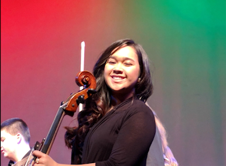

Other things about me...
I am working on a startup
In the summer of 2020, I took a class class Technology and Entreperneurship. This class inspired me to pursue a dream of mine -- to start a business. So, I gathered a team of people who may not have been experts but would work hard towards our new common goal. The company went throguh many phases, but it is currently called Bevey. Look out for our beta in the coming year!
I am 1/4 Hawaiian and 3/4 Japanese
Culture is super important to me, so this was something I had to add. In my about me section on the home page you can see the clubs I'm involved in which all revolve around culture. I'm so glad I came to a college in which I could learn more about my identity.
I love to cook and bake
Cooking is one of my guilty pleasures and in high school I would always bake for any occasion -- especially during stressful ones. My favorite dish to make is chicken katsu curry, and my favorite dessert to make areb red velvet cupcakes. However, these aren't my favorte foods XP.
I play the cello, ukulele, and kalimba
In high school, I was in my school's orchestra and a young artists orchestra for the cello. I proudly sat first chair for 2 years but unfortunately have not continued to play in a string orchestra in college but I still occasionally pick it up becuase playing makes me happy. I've been playing the ukulele since I was a child, but unfortunately I'm not that good still. I started playing the kalimba over the summer of 2020 because I saw an add for it.
I love Asian dramas and music
This somewhats goes with my love for cultures, but with the recent wave of Korean culture becoming popular I have had more acceess to a variety of dramas and music. My favorite K-POP group is Seventeen and my favoriet J-POP group is Official HIGE DANdism. My favorite Asian drama is Goblin.
I am a strong advocate for naps
I truly believe that everyone should take at least one nap a day. Because of my busy schedule, I rarely get 8 hours of sleep. So I take a nap to make up for lost time.